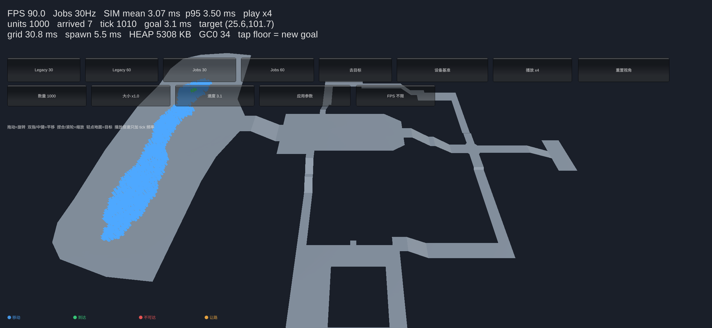
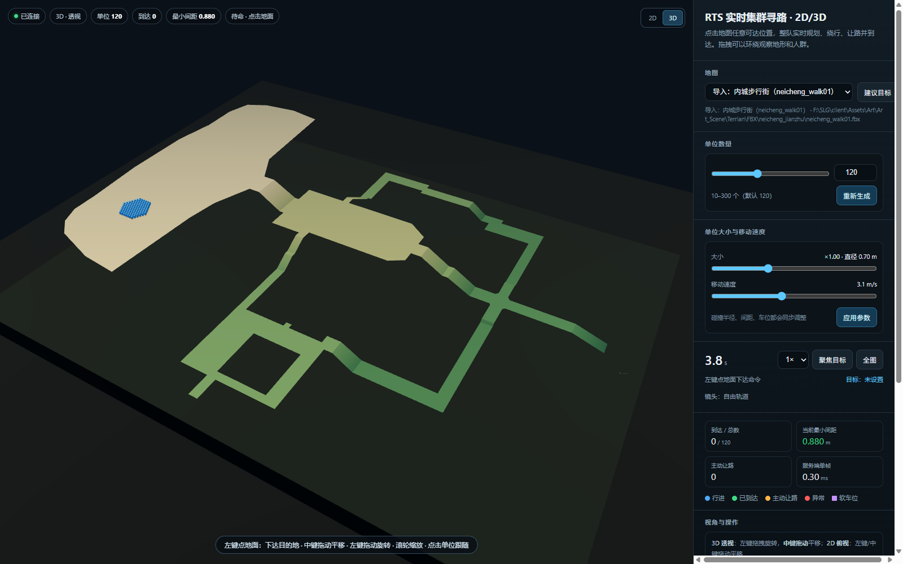
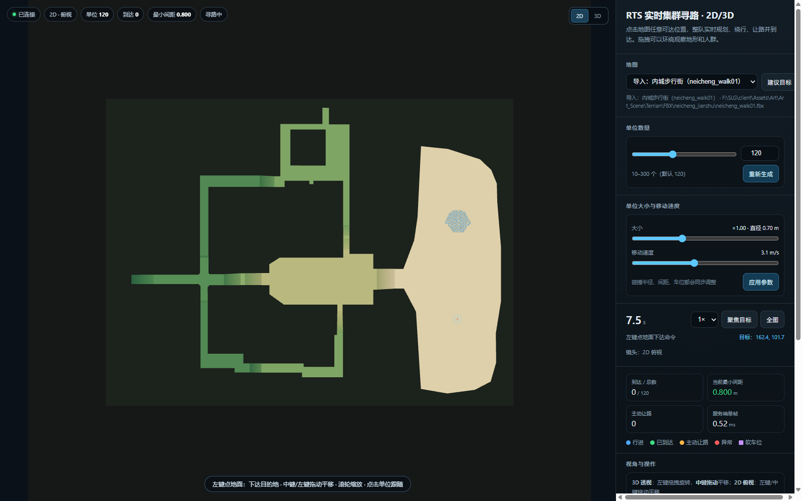
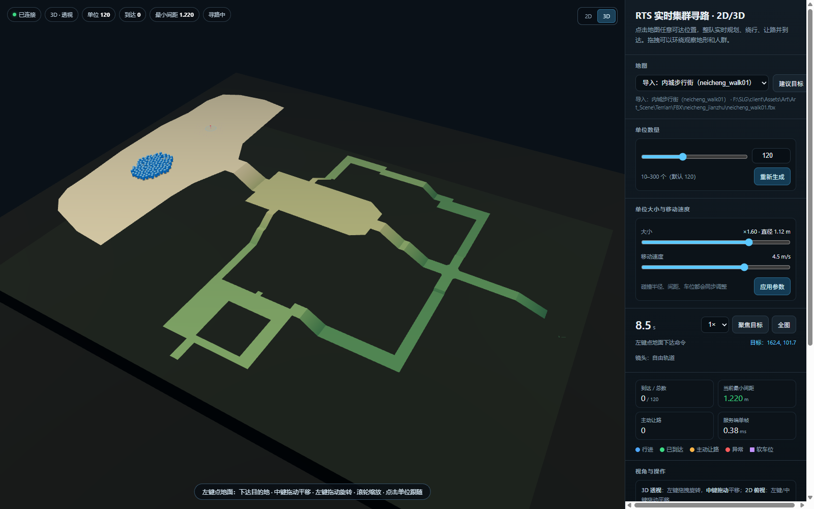
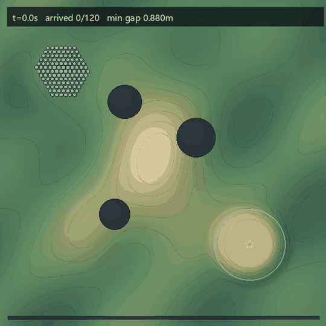

RTS · CROWD NAVIGATION · 2D / 3D
集群寻路算法
面向 100–1000 个单位的实时集群寻路原型：无重叠、无推挤，前排让行，整队沿路径通过斜坡和窄通道，并支持点击目标、2D/3D 视角和单位尺寸/速度调整。
局部避让ORCA 互惠避让 + 顺序提交，单位不会互相推挤或重叠。
全局路径A* + 视线平滑 + 分帧规划，能通过斜坡、门洞和窄通道。
目标停车目标点直接作为终点，单位持续向目标靠；拥挤时再停在人群边缘。
实时交互点击下达目标，支持 120/300/460/1000 单位、2D/3D、缩放/平移/跟随。
Unity 1000 人 Jobs/Burst 核心
同一套集群逻辑已经移植到 Unity 6：SoA NativeArray + Burst 空间哈希/ORCA/顺序提交，1000 人在 Samsung A16 上 90 FPS，点击目标 <1 ms。工程、真机数据和接入说明都在仓库的 Unity/CrowdNav.Unity。

效果截图




本机运行
GitHub Pages 只能托管静态页面，不能运行 .NET WebSocket 服务；实时集群 Demo 需要在本机启动。
git clone https://github.com/jeason1997/cluster-pathfinding-algorithm.git
cd cluster-pathfinding-algorithm
dotnet run --project src/CrowdSim.Interactive/CrowdSim.Interactive.csproj -c Release --no-launch-profile
# 浏览器打开 http://127.0.0.1:8799/Windows 也可以直接双击 run-interactive.cmd。
操作
左键点地面设置目的地。
左键拖拽 / 中键拖拽3D 旋转 / 平移；2D 中左键都平移。
滚轮 / 点击单位缩放 / 镜头跟随。
2D / 3D右上角切换，快捷键 1 / 2。